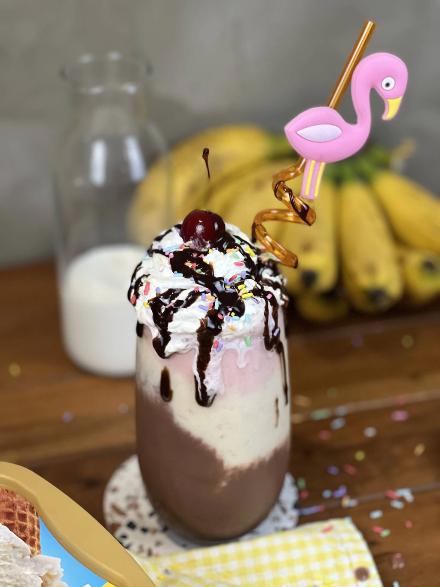

A place where recipes
& people meet
Welcome Back Members!
Thinking about what to cook next? Sign up now to get more recipe ideas, share your own dishes,
and find out what the rest of the community are making and eating!
Presenting our Recipes

Macaroni Salad

Bananna Split milkshake
5 Easy Dessert Recipe for you and your Family
1.Macaroni Salad
Ingredients
1 (700-ml) bottle Lady’s Choice Real Mayonnaise
1 small can condensed milk
1 cup sliced cheddar cheese
1/3 cup minced carrots
2 tbsp minced onions
1/2 cup pickle relish, drained
1/2 cup diced cooked ham
1/2 cup pineapple tidbits, drained
1 cup diced cooked chicken breast
400 g macaroni, cooked al dente
Procedure
Combine Lady's Choice Real Mayonnaise and condensed milk in a bowl. Mix until smooth.
Add cheese, carrots, onions, pickle relish, ham, pineapple tidbits, and chicken.
Add cooked macaroni and mix well. Chill until ready to serve
2. Mango Float
Ingredients
4 pieces otap cookies
1 mango sliced
1/4 cup all-purpose cream
1/4 cup milk
2 scoops Selecta Super Thick Classic Vanilla ice cream
Procedure
In a bowl, crush the cookies and slice the mango into bite-sized chunks.
Mix the milk and cream in a smaller bowl until ingredients are well combined.
Assemble by alternating layers of crushed otap cookies, a drizzle of the milk mixture, mangoes, and a scoop of Selecta Super Thick Classic Vanilla ice cream in a glass.
Repeat the layering until the glass is filled, with the last layer being a scoop of ice cream garnished with crushed otap.
Serve immediately!
3. Ginataang Mais
Ingredients
1 tbsp butter
1 piece onion chopped
2 cloves garlic, chopped
1 can whole kernel corn, drained
1 cup water
1 pack (33g) Knorr Ginataang Gulay Mix
1/2 cup malunggay leaves
CONVERT
Procedure
This dish is so easy to make. You just need to make your pan nice and hot over medium heat. Melt the butter and throw in the onion and garlic.
Next, add in the corn then the 1 cup water with the Knorr Ginataang Gulay Mix. Stir well and allow to simmer until it thickens.
Remove from heat and add in dahon ng malunggay, season with pepper and that’s our dish. Usually,
it’s the simple dishes that have the most flavour. This dish proves itself worthy and more!
4. Banana Split Shake
Ingredients
1 scoop Selecta Super Thick Vanilla
1 scoop Selecta Super Thick Chocolate
1 scoop Selecta Super Thick Strawberry
3/4 cup Milk (Divided Into 3)
3 pcs Ripe Banana
2 swirls Whipped Cream (Optional)
Candy Sprinkles
Cherry (Optional)
Procedure
In a blender, put together 1/4 cup milk, vanilla ice cream, and one banana. place in a small glass.
Do the same for the strawberry and chocolate ice cream.
In a tall glass, arrange the milkshake in your order of preference.
5. Ice Cream Sandwich
Ingredients
1 1/4 cups unsalted butter softened
3/4 cup white sugar
3/4 cup soft brown sugar
1 teaspoon vanilla extract
1/4 teaspoon salt
2 1/4 cups all-purpose flour
1 1/4 cups chocolate, chips or chopped
4 cups Selecta Classic Super Thick Vanilla ice cream
Procedure
In a large mixing bowl, cream butter, sugar, salt, and vanilla until light and fluffy.
Add the flour, folding in the chocolate chips right after.
Divide this mixture in two.
Take an 8in x 8in square baking tin. Line it with wax paper or cling film, leaving a small overhang. In the pan, press half the cookie dough until base is fully covered.
Remove the cookie dough and chill in the fridge.
Repeat the process with the remaining half of the dough. Leave a larger cling film overhang this time.
To decorate, take each sandwich and dip it into melted chocolate. Cover half and garnish with nuts, sprinkles, marshmallows, etc. Be quick when decorating since chocolate tends to set rapidly on the ice cream sandwich.
Serve immediately or wrap securely in baking paper or cling film before returning to the freezer.